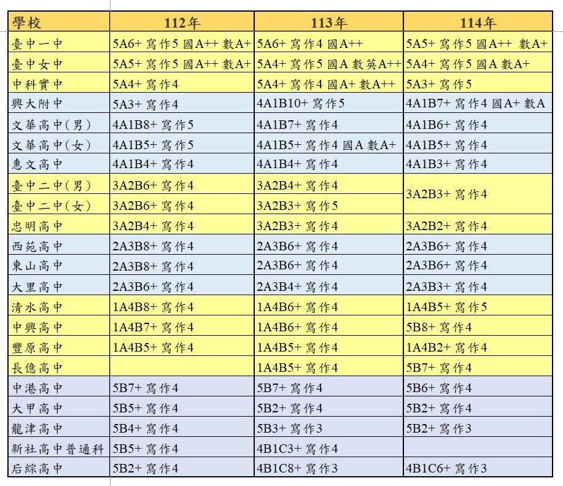
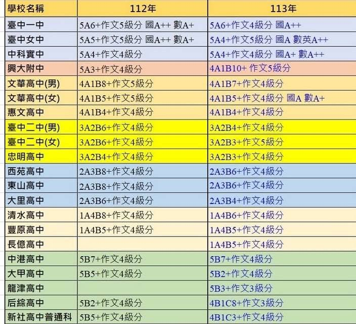
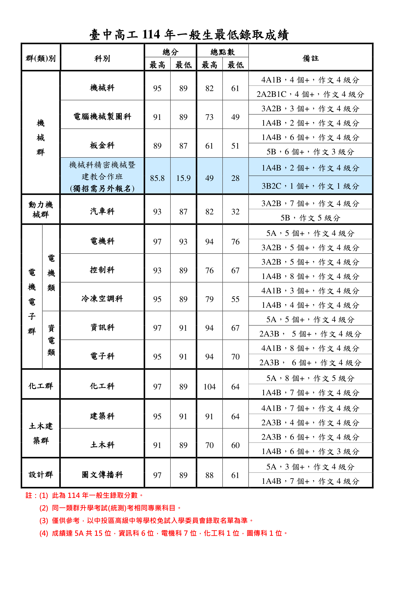

{{ currentQuiz.title }}
{{ currentQuiz.question }}
{{ currentQuiz.studentA.name }}
{{ currentQuiz.studentB.name }}
{{ ((userGuess === 'A' && quizComparison.winner === 'A_WIN') || (userGuess === 'B' && quizComparison.winner === 'B_WIN') || (userGuess === 'BOTH' && quizComparison.winner === 'BOTH_WIN')) ? '太厲害了！你完全猜對了！🎉' : '差一點點！這正是許多考生的最大盲點！' }}
{{ currentQuiz.explanation }}
志願選填「電腦分發篩選器」投入模擬器
將你的會考成績與志願順序投入 3 萬人分發母體，真實模擬電腦逐志願篩選與超額比序！
🎉 恭喜錄取第 {{ filterResult.admittedChoice.choiceOrder }} 志願： {{ filterResult.admittedChoice.school.name }} {{ filterResult.admittedChoice.school.dept }}
⚠️ 填報的 6 個志願皆因名額超額未錄取，建議增添安全保底志願！
錄取門檻與 3 萬人常態分佈落點比較
依據中投區各校核定招生名額與歷屆錄取標準，將你的分數標繪在落點座標上！
【圖一】中投區公立熱門高中職錄取門檻與落點積點比較圖
紅色長條為【最低錄取門檻】，綠色長條為【穩固安全落點線】。你的積點為 {{ filterUserStats.examPoints }} 點。
【圖二】中投區 30,000 名考生會考積點常態分佈與志願梯隊容量圖
曲線呈現全中投區 3 萬名考生成績分佈金字塔，清楚標定各招生梯隊名額累積界線。
【原始圖解】中投區 112~114 年落點比較與預估分數高清圖表
點擊圖片或按鈕即可開啟高畫質全螢幕燈箱放大檢視，細看各校各科錄取標準！
彙整臺中一中、女中、中科實中、興附、文華、二中、忠明至后綜之三年錄取標準。

詳載中投區各校預估積點與作文標準，標註一中、女中、二中、忠明等重點學校單科標示。

官方核定公告！機械、電機、資訊、建築、化工等 14 群科完整總分、總積點與最低標示。

臺中高工 114 年各群科最低錄取成績與落點標準
依據臺中高工官方公告之《114 年一般生最低錄取成績》，即時比對你的會考成績（{{ filterUserStats.examPoints }} 點）！
| 群(類)別 | 科別名稱 | 最低總分 | 最低總積點 | 114 最低錄取門檻 | 你的達標診斷 | |
|---|---|---|---|---|---|---|
| {{ item.group }} | {{ item.dept }} | {{ item.minScore }} 分 | {{ item.minPoints }} 點 | {{ item.minGrade }} | {{ getTcivsDeptBadge(item.minPoints, item.maxPoints).text }} ({{ getTcivsDeptBadge(item.minPoints, item.maxPoints).diffText }}) | |
| 沒有找到符合「{{ tcivsSearchText }}」的科別資料 | ||||||
- {{ note }}
112~114 年 21 所中投區公立高中錄取門檻比對表
對照你目前的會考成績（{{ filterUserStats.examPoints }} 點），系統即時診斷各校達標機會！
| 學校名稱 | 114 年錄取標準 | 114 預估積點 | 你的達標診斷 | ||
|---|---|---|---|---|---|
| {{ item.school }} | {{ item.y114 }} | {{ item.pts114 }} 點 | {{ getCutoffMatchBadge(item.pts114).text }} ({{ getCutoffMatchBadge(item.pts114).diffText }}) | ||
| 沒有找到符合「{{ historySearchText }}」的學校資料 | |||||
1. 會考積點總分為 111 點（各科 A++ 21點、A+ 18點、A 15點、B++ 12點、B+ 9點、B 6點、C 3點，加上作文 6 點）。
2. 中投區「同分先比總積分（滿分100）、次比志願序（每校連續選填同分）、再比多元表現（30分）、接著比會考總積分（30分），同分時才進入總積點（111點）比序」。因此即使總積點相同，各科「+」的多寡與作文均可能成為關鍵勝負手！
自訂考生與志願序沙盒對決
可隨意調整等級、作文、志願序、多元表現，立刻模擬電腦分發比序！
116 學年度中投區免試入學比序順序全景動畫流程圖
嚴格依據臺中市與南投縣教育局簡章《附表1 比序順序流程圖》核定製作，電腦分發 12 道關卡一步一步動態走給你看！
{{ node.title }} 比序中
{{ node.summary }}
{{ selectedNode.title }} {{ selectedNode.badge }}
{{ selectedNode.officialQuote }}
{{ selectedNode.detail }}
中投區「總積點（滿分111點）」相同時，進入第 8 關比全部各科「+」號加總（A++ 算 2 個+、A+ 算 1 個+、B++ 算 2 個+、B+ 算 1 個+）。總 + 號多者勝出！
國文科位居第一順位！若前面各項皆平手，單科國文高者直接優先錄取！
若連續選填同一所學校之不同科別（例如：第1志願台中高工電機、第2志願台中高工電子、第3志願台中高工資訊），全數享有「第 1 志願序 30 分」完全不扣分待遇！
經過 12 道比序若仍完全平手超額，依規定全數增額錄取，絕不靠抽籤決定命運，最高保障每一位學生的努力！
116 中投區國三志願選填錦囊與避坑秘笈
由簡章條文轉化而成的六大關鍵戰略，帶你看懂電腦分發背後的遊戲規則！
連續填同校不同科「完全不扣分」
中投區特別規定：「連續選填同校不同類科者皆為同一志願序」。例如連續填寫臺中高工資訊科、電機科、機械科，3 個志願都算在第 1 志願序（30分滿分）！不用擔心第2科會被降分！
10 個志願序同分！大膽前進夢幻
志願每 10 個志願為一群組。第 1 至第 10 志願序通通都是 30 分！這代表你在前幾個志願可以大膽填寫夢幻學校，就算沒上，第 2、第 3 志願依然享有 30 分滿分保障！
「保 5A」遠比「拚 A++」更重要
第一關比的是「總積分」，只要有任一科掉到 B，會考積分立刻從 6 分跌至 4 分（少2分）。就算另外 4 科全 A++、作文滿分，總積分依然會直接輸給 5A 0+！均衡不偏科是第一準則！
國文科是中投區的「定海神針」
在單科比序的法定順序中，中投區依序為：國文 ➔ 數學 ➔ 英語 ➔ 社會 ➔ 自然。國文科高居第一順位！當兩生積分、積點、+號數皆相同時，國文科等級較高者直接勝出！
寫作 6 級分在一中女中的絕殺力
寫作測驗計入「會考總積點（佔 1~6 點）」。在競逐臺中一中、臺中女中等頂尖學校時，人人皆為 5A，此時總積點 100 點以上是兵家必爭之地，作文多 1 點就能決定能否上榜！
中投區絕不抽籤，同分增額錄取
經過 12 道比序若仍完全同分超額，依法令明文「不予抽籤，以增額錄取處理」。這展現了升學制度對每位同學努力成果的最高尊重！